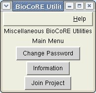

BioCoRE enhancements are available from the BioCoRE submenu of the Extensions menu within VMD.
To login to BioCoRE, provide your username and password to the Login window. You likely won't need to change the URL of the BioCoRE server. Once you click 'Log in to BioCoRE' and wait a few seconds, you will receive a popup box telling you of your success or failure.
After logging in, you can use the other features (described below) of BioCoRE from within VMD.
One useful feature is the ability to save and load interesting
molecular views to BioCoRE, so that you or your collaborators can
view them, both now and later.
From VMD, you can select Extensions | BioCoRE | Share VMD Views, which will
bring up the "Saved States Window" The window provides an interface to allow
users to save VMD states for later retrieval, or to share with others.
From the window, you can load molecules into VMD and modify the view. When you
get it to a representation that you wish to keep, you can save it to BioCoRE
with a name and description. BioCoRE is divided up into projects,
and all others in the project in which you saved the project can see it. They
can load it and see the molecule in the exact same representation and
orientation that you did. They can further modify it, and save their state back,
which you can then view.
More Information: VMD Load/Save State Window help
Designed to simulate the BioCoRE Control Panel, 'Chat' allows you to communicate with other members of the BioCoRE projects that you are enrolled in. Selecting Chat will open a chat window. You can pick which project you wish to chat in by using the Project menu option. Type your messages in the text line at the bottom of the window.
More Information: BioCoRE Chat Window help
From the Utilities window you do various BioCoRE-related activities.

|
|
|
|